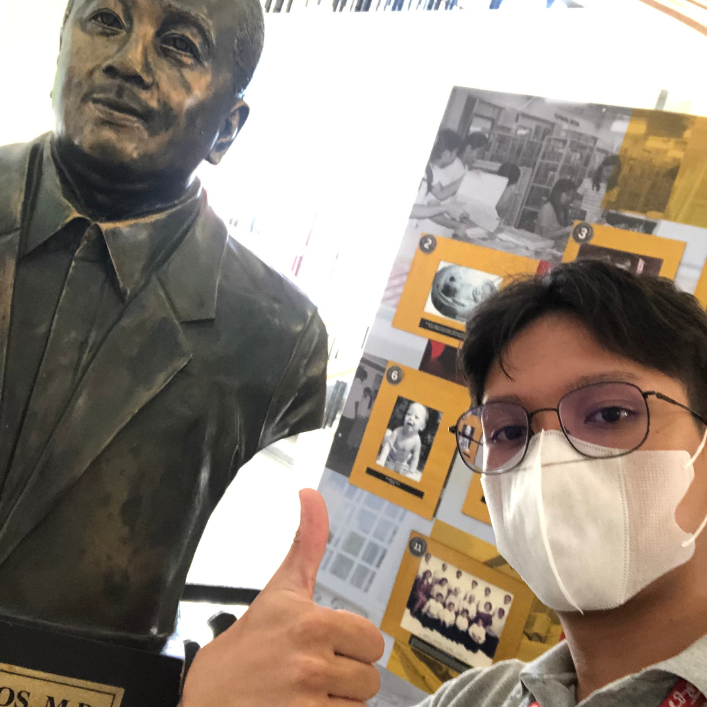
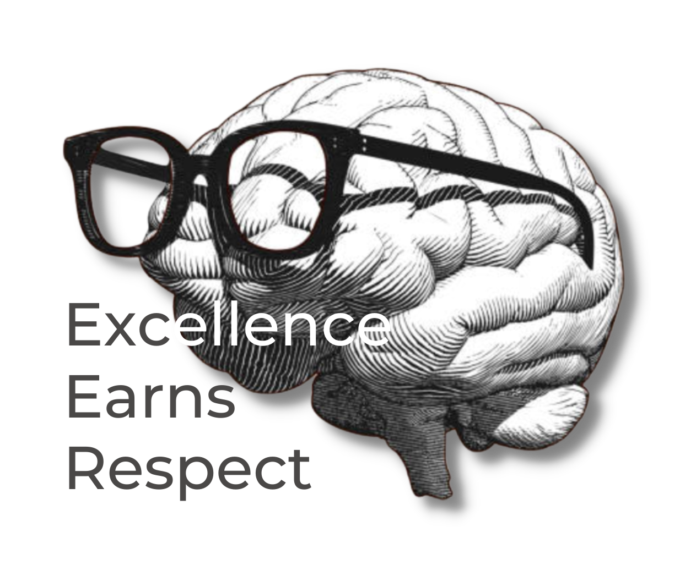

.png)
Excellence?
Unleash the beauty of your personality!
Excellence is not just about achieving the highest possible standards, but also about consistently striving to improve and grow in your abilities and skills. When you commit yourself to excellence, you become a standout performer in your field or industry. Your work is recognized as xceptional and is highly valued by others. Moreover, when you aim for excellence, you develop a reputation for being someone who can be relied upon to produce high-quality work consistently.
This reputation can open doors to new opportunities, whether it be a promotion, a new job, or recognition from peers and superiors. Ultimately, excellence is a mindset that permeates all aspects of your life. It requires a willingness to put in the effort and discipline needed to achieve your goals, as well as the ability to continually learn and adapt as circumstances change. By embracing excellence as a guiding principle, you can become the best version of yourself and stand out from the crowd in a meaningful way.
Excellence earns respect.
When you achieve excellence, you earn the respect of others in your field or industry. Your peers and superiors will recognize your skills, expertise, and dedication, and you will become known as someone who can be relied upon to produce outstanding work.
The image above implies that fostering excellence as a young citizen is important for personal growth, success, and contributing to society. To do so, young citizens should set high standards for themselves and their work, practice discipline and consistency, seek feedback and mentorship embrace challenges and failures as opportunities to learn and grow, and pursure their passions with dedication and enthusiasm.
"The excellence of youth lies not in their age, but in their attitude towards striving for greatness."
By cultivating these qualities, young citizens can develop the skills and qualities necessary to excel in their chosen fields, make meaningful contributions to their communities, and become responsible and engaged members of society.